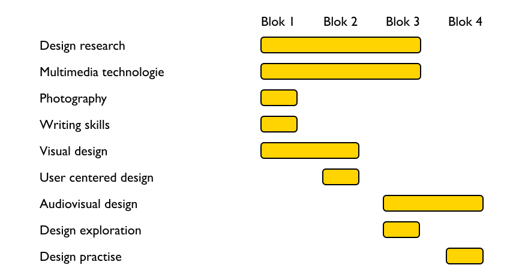
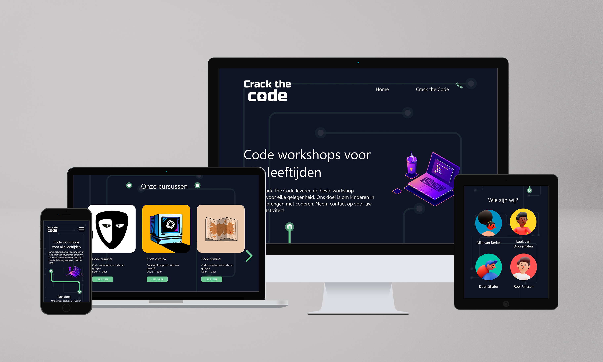
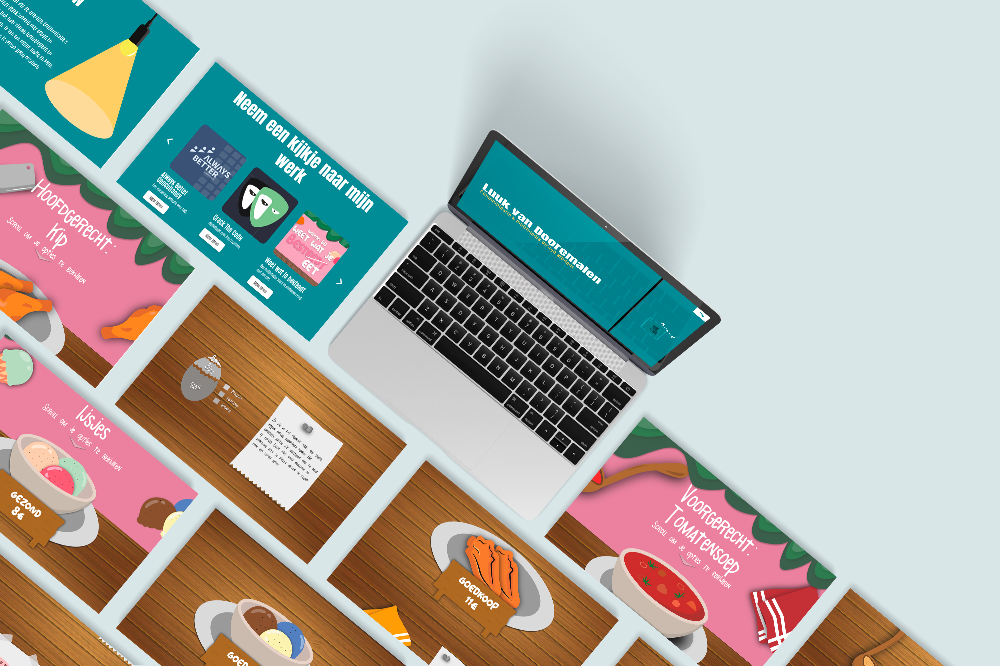
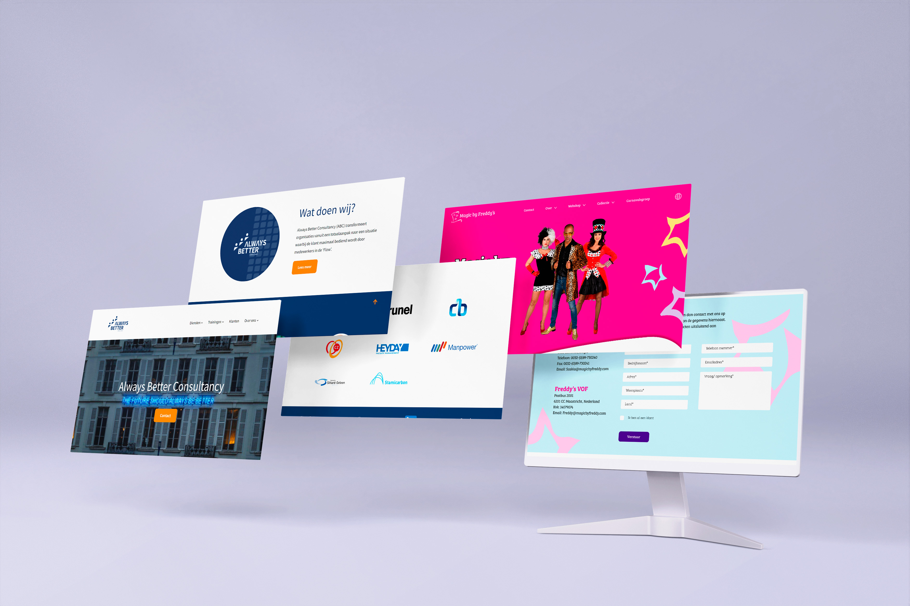

Communicatie & Multimedia Design
Ontwerpen

Communicatie

Ontwikkeling

Innovatie

Projectmatig werken

Creativiteit

Jaar 1
Jaar 1 is het jaar waar je kennis maakt met de vakken. Aan het einde van elk blok pas je de geleerde skills altijd toe op opdrachten voor echte werkgevers
Ontdek meer →


Jaar 2
Jaar 2 werk je in groepsgenoten voor echte opdrachtgevers. Blok 2.3 en 2.4 is een grote opdracht van 20 weken.
Ontdek meer →
blok 1: Interaction design
blok 2: Multimedia Design
Weet wat je besteedt
blok 3: Keuze module
portfolio
blok 4: Keuze module

Jaar 3
Jaar 3 begin je met een stage van 20 weken of te wel 2 blokken. Hierna volg je 2 minors. Elk blok 1 minor.
Ontdek meer →

Jaar 4
Jaar 4 begint met 2 minoren. Elk blok 1 minor. Hierna heb je je afstudeer stage. Deze duurt 20 weken.
Ontdek meer →
blok 1: Minor
blok 2: Minor
blok 3: Stage
blok 4: Stage